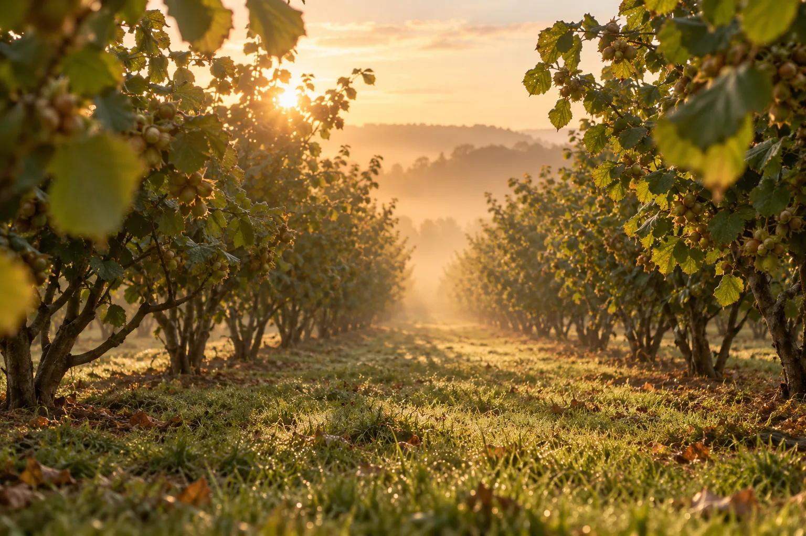
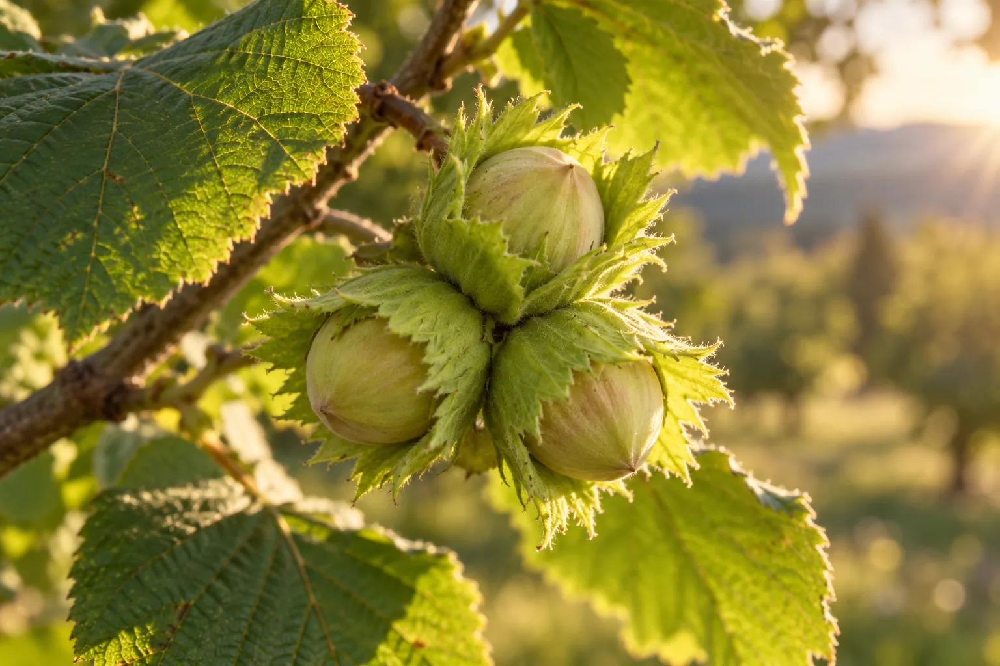
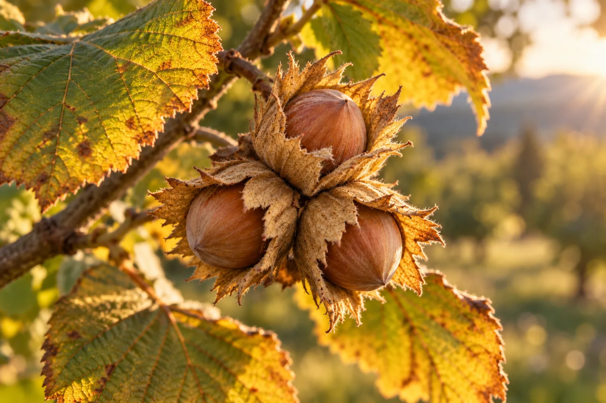
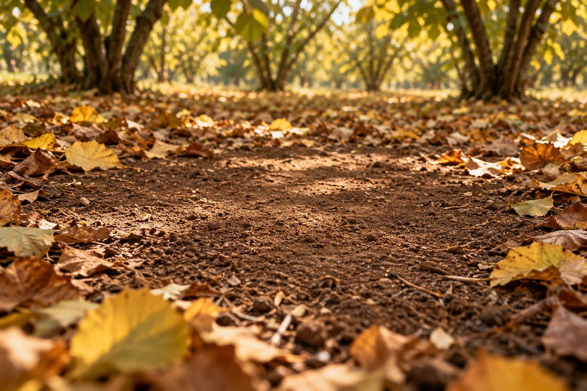
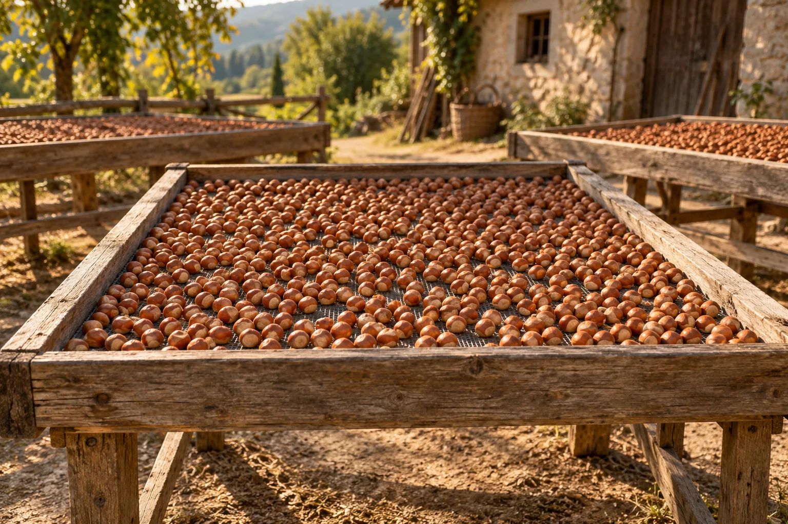
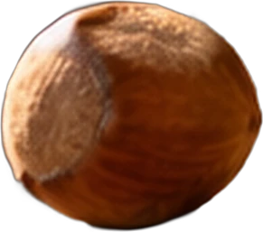
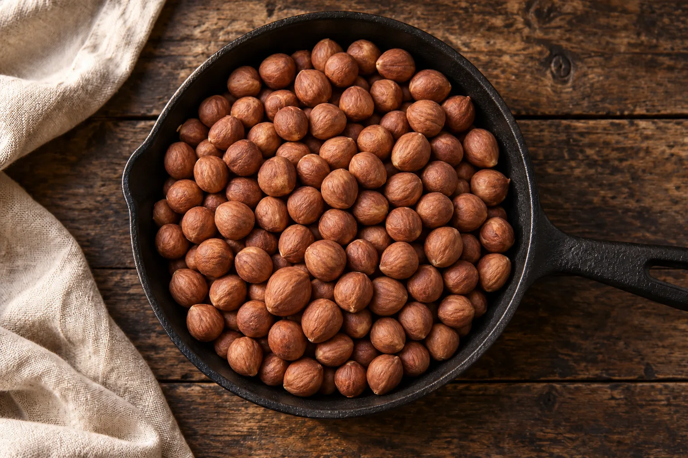
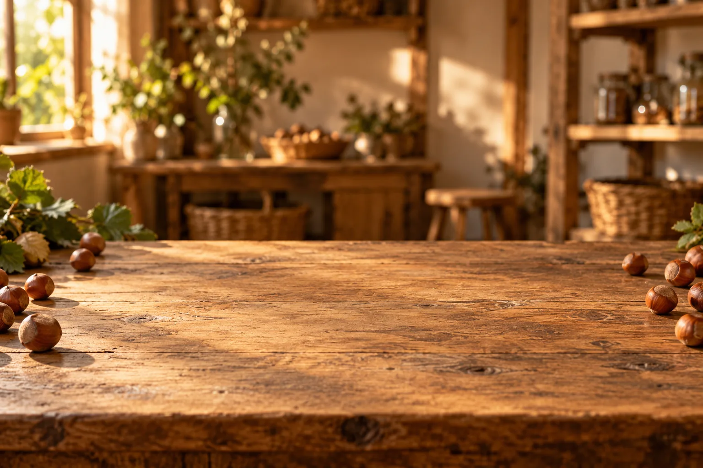

Od leske
do kese
jedna jesen, jedan kilogram
Sve počinje u voćnjaku
U zoru, između redova leske. Ona ne žuri: rodi jednom godišnje i za to joj treba celo leto.
Mlad lešnik raste skriven
Zelena košuljica ga čuva od sunca i ptica. Iznutra je još mek i mlečan.
Leto prolazi, košuljica se suši
Krajem avgusta ljuska tamni i tvrdne. Lešnik postaje težak i sprema se da padne.
Berba: padaju sami
Zreli lešnici se sami otkače sa grane. Mi ih samo skupimo sa jesenjeg lišća, jedan po jedan.
Polako, na suncu
Nekoliko dana na drvenim lesama. Sunce izvuče vlagu, ljuska zazvoni kad ih protreseš.
Ljuska puca, jezgro izlazi
Svaki lešnik prođe kroz krckalicu. Ono što ostane je ono zbog čega smo krenuli.
Pečemo dok ne zamiriše
Petnaestak minuta na 160°. Opna popuca i sama se ljušti, a cela kuća miriše na lešnik.
Kilogram po kilogram
Ohlađeni, očišćeni i izmereni idu u kesu. Zatvoreno, potpisano, spremno za tebe.